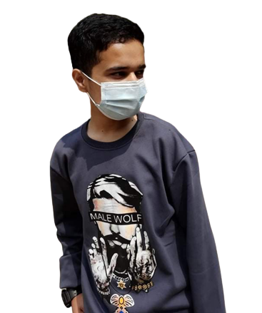
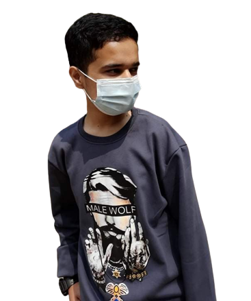

My Portfolio
 

About Me
I am Shree Krishna Devkota currently living in Kathmandu. I am pursuing my carrer as aerospace engineer in Pulchowk Campus.
I am keenly interested in the aerospace part and voraciously waiting to gain more knowledge about aerodynamics.
Portfolio
Project 1
This is the simple and efficient plane suppporting maximum 3 passengers. It has small engine and fuel is stored in the wings.It has 3 navigation lights
in order to make it visible during night time. It has ailerons to make rotation possible clockwise as well as anticlockwise. For the yaw movement of the
plane rudder is at the back of the plane. Elevator is used during rise and fall and the radio anteena is used to discharge the electricity produced due to friction.
The wheels of the plane is covered in order to reduce the aerodynamic drag of the plane to make it more efficient and less fuel consuming.
Planes are flying vehicles that use aerodynamic principles to stay in the air. They're made up of parts like wings, engines, and a fuselage.
Jet engines provide the thrust needed for forward motion. Pilots navigate using navigation systems and communicate with air traffic control.
Safety measures are in place to ensure safe travel. While planes offer fast transportation, they also have environmental impacts.The planes are useful
source of transportation in modern days so its safety must be ensured and should be givern proper care during its manufacture.
Project 2
Beginning at the far right, the body of the rocket is a green cardboard tube with black fins attached at the rear. The fins can be made of either plastic or balsa wood and are used to provide stability during flight. Model rockets use small, pre-packaged, solid fuel engines The engine is used only once, and then is replaced with a new engine for the next flight. Engines come in a variety of sizes and can be purchased at hobby stores and at some toy stores. The thrust of the engine is transmitted to the body of the rocket through the engine mount. This part is fixed to the rocket and can be made of heavy cardboard or wood. There is a hole through the engine mount to allow the ejection charge of the engine to pressurize the body tube at the end of the coasting phase and eject the nose cone and the recovery system. Recovery wadding is inserted between the engine mount and the recovery system to prevent the hot gas of the ejection charge from damaging the recovery system. The recovery wadding is sold with the engine. The recovery system consists of a parachute (or a streamer) and some lines to connect the parachute to the nose cone. Parachutes and streamers are made of thin sheets of plastic. The nose cone can be made of balsa wood, or plastic, and may be either solid or hollow. The nose cone is inserted into the body tube before flight. An elastic shock cord is connected to both the body tube and the nose cone and is used to keep all the parts of the rocket together during recovery. The launch lugs are small tubes (straws) which are attached to the body tube. The launch rail is inserted through these tubes to provide stability to the rocket during launch.
Contact Me
You can reach me at: shreekrishna1514@gmail.com
080bas043.shree@pcampus.edu.np